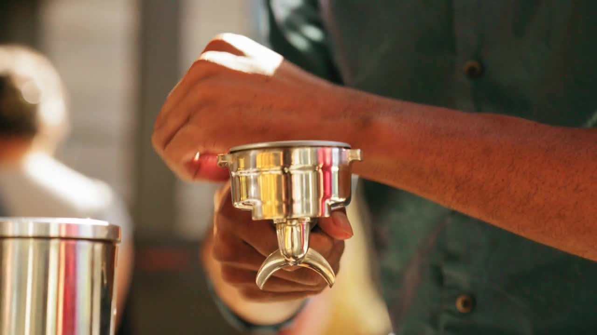

OUR STORY커피 한 잔의 여유
좋은 커피와
아무것도 하지 않을
작은 여유.
✳
바쁜 하루에서 한 걸음 벗어나는 곳.
갓 내린 커피의 향과 오븐에서 막 나온 빵,
그리고 천천히 흘러가는 시간을 준비합니다.
A good cup. A warm bite.
A little room to slow down.

WARM FROM THE OVEN조금 더 머물러도
조금 더 머물러도
괜찮은 시간.
THE WAY WE DO우리가 좋아하는 것들
Care
한 잔의 시작부터 마지막 한 모금까지.
작은 과정에도 마음을 담습니다.
Warmth
따뜻한 커피와 다정한 인사.
자연스럽게 편안해지는 공간을 바랍니다.
Everyday
특별한 날보다 평범한 날에.
문득 다시 찾고 싶은 일상의 카페.
Recent Reviews
Google 4.9 / 5 · 리뷰 9개 ↗Google · Naver 방문객 리뷰 발췌 · 2026.10.20 확인
GOOGLE REVIEW
“사장님 여전히 친절하다.”
GOOGLE REVIEW
“자그마하지만 따뜻한 분위기의 카페예요”
GOOGLE REVIEW
“공간도 아늑하고 커피가 정말 맛있음. 직접만든 스콘과 플랩잭은 꼭 먹어봐야 함!!”
NAVER REVIEW
“사장님처럼 공간도 넘 이쁘고 따뜻해요!”
NAVER REVIEW
“커피 맛집에 버터떡과 휘낭시에 맛집이군요~”
NAVER REVIEW
“커피 한입 마시니 향이 강하고 맛있어요”
Thank you for visit방문 안내
DVATE
NAMSAN
COFFEE
- LOCATION
- B1, 1 Supyo-ro, Jung-gu, Seoul, South Korea
- OPENING HOURS
- MON–WED 09:00 — 17:00
THU–FRI 11:00 — 23:00
SAT 12:00 — 18:00
SUN CLOSED
방문 전 인스타그램 공지를 확인해 주세요.Please check Instagram for updates before visiting.